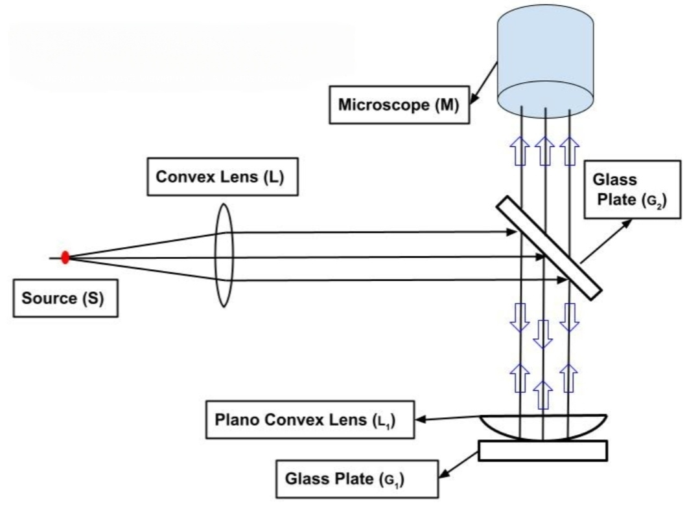

Determination of the diameter (D) of the rings
| Ring No | Left Forward Reading | Left Backward Reading | Right Forward Reading | Right Backward Reading | Diameter D1 | Diameter D2 | Mean D |
|---|---|---|---|---|---|---|---|
To study the formation of Newton’s rings in the air-film in between a plano-convex lens and a glass plate using nearly monochromatic light from a sodium-source and hence to determine the radius of curvature of the plano-convex lens.

Experimental setup to observe Newton’s Rings
When a parallel beam of monochromatic light is incident normally on a combination of a plano-convex lens and a glass plate, a part of each incident ray is reflected from the lower surface of the lens and another part is reflected from the top surface of the glass plate. These reflected rays interfere and produce alternate dark and bright circular fringes called Newton’s Rings.
For a normal incidence of monochromatic ligth, the path difference between the reflected rays is very equal to 2μt where μ and t are refractive index and thickness of the air-film respectively.
For dark rings:
2μt = nλ
For bright rings:
2μt = (n + 1/2)λ
The diameter of the n-th dark ring is given by:
Dn2 = 4nλR
Radius of curvature of the plano-convex lens:
R = (Dn+m2 − Dn2) / 4mλ
Move the lead screw to align the crosshair with the center of a dark ring, then click record.
| # | Position (cm) | Side |
|---|
| Ring No | Left Forward Reading | Left Backward Reading | Right Forward Reading | Right Backward Reading | Diameter D1 | Diameter D2 | Mean D |
|---|---|---|---|---|---|---|---|
| Ring no. | Mean D in cm | D2 [cm2] | Value of (n+m) | Value of n | Value of m | D2n+m − D2n | R = ΔD2 / (4mλ) | Mean R in cm |
|---|---|---|---|---|---|---|---|---|
Maximum proportional error in R (using V.C. = 0.001 cm):
(ΔR / R)max = 4 × V.C. / (Dn+m − Dn)
| Pair (n+m, n) | Dn+m (cm) | Dn (cm) | Dn+m - Dn (cm) | % Error |
|---|